Этап с настройкой окружения для запуска Intel Advisor соответствует аналогичному шагу в предыдущей лабораторной работе. Запуск Intel Advisor с использованием пользовательского интерфейса (выполняется из консоли с настроенным окружением):
C:\Users\k.sandalov>advisor-gui
Для создания нового проекта - Create project:
Выбор имени проекта и его расположение:
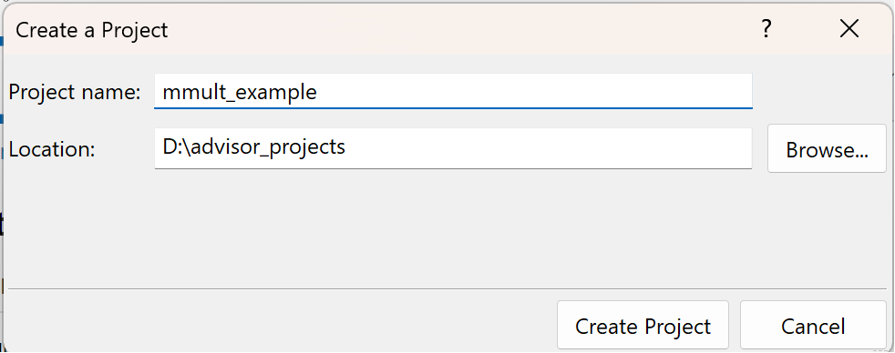
После этого, для начальной настройки проекта нужно на вкладке Analysis Target -> Survey Hotspots Analysis выбрать анализируемое приложение, указав полный путь до полученного .exe файла в окне Application. Соответственно, аргумены запускаемого приложения (выбран режим Launch Application), задаются в окне Application parameters.
В рамках лабораторной работы используем тестовое приложение mmult из этого репозитория. Сперва необходимо собрать его базовую версию со следующими опциями компиляции:
add_compile_options(-O3 -Qopt-report=max -debug)
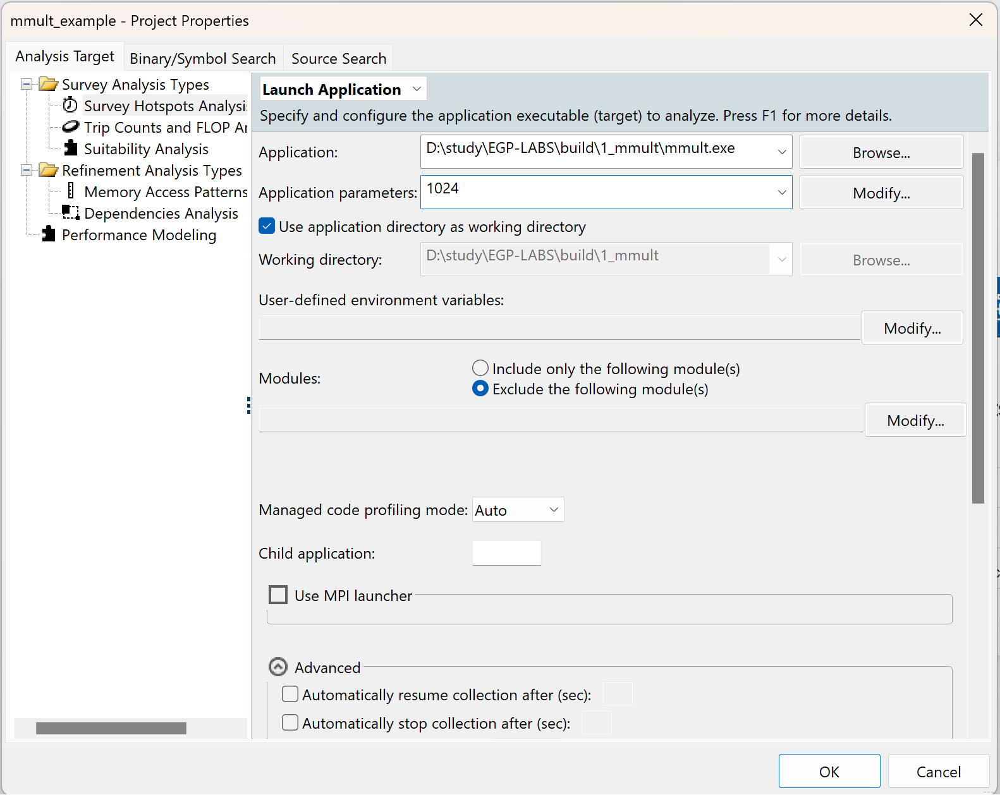
Дополнительно на вкладке Analysis Target -> Trip Counts and FLOP Analysis необходимо выбрать пункт Enable Memory-Level Roofline with cache simulation:
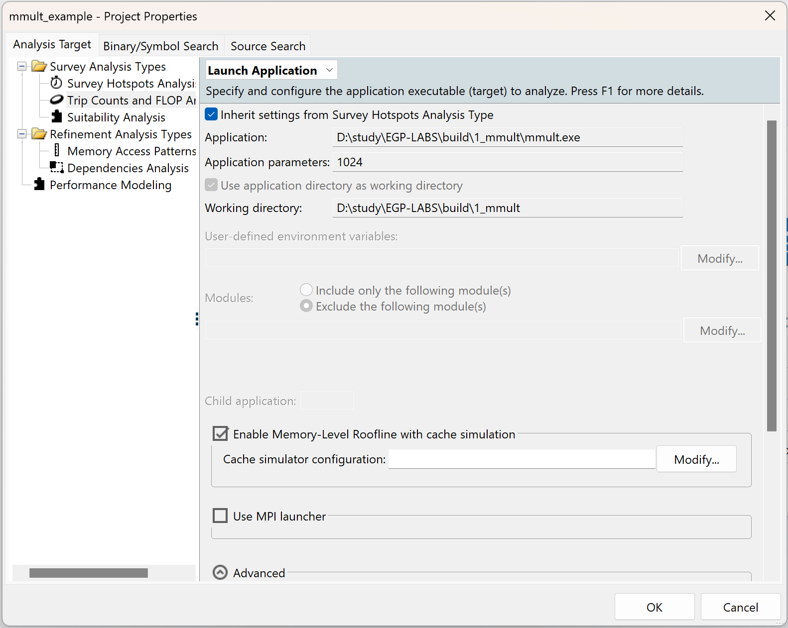
При создании нового проекта первым должно появиться окно с выбором определенного типа анализа или же, Perspective selector:
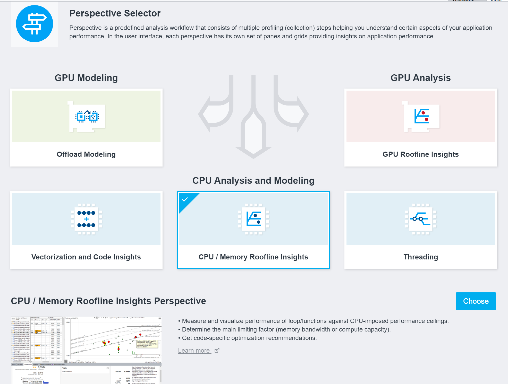
Нужно выбрать CPU / Memory Roofline Insights.
В блоке Analysis Workflow можно переключиться между разными перспективами а так же подобрать параметры для текущего типа анализа и запустить сбор данных + непосредственно сам анализ.
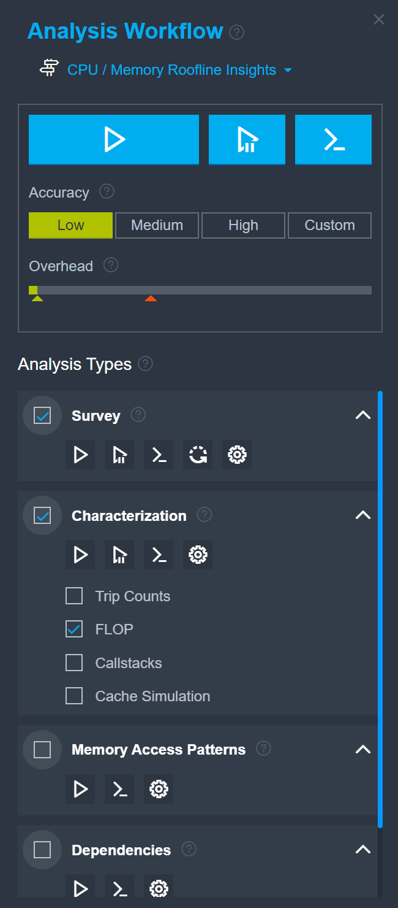
По типам анализов:
Задание: Результаты сравнения добавить в отчет. Время выполнения анализа можно найти на вкладке Summary в блоке Collection Details:

Summary:
На этой вкладке приведены общие сведения о производительности приложения:
GFLOPS = FLOPs / Seconds (аналогично и INTOPS)
ArithmeticIntensity(AI) = FLOPs / Bytes (отношение кол-ва вычислений к кол-ву запрошенных для этого байтов из памяти)


Тут же можно найти рекомендации, применимые глобально ко всему приложению, например: Использовать более широкий набор инструкций.
Задание: Зафиксировать время выполнения программы, факт использования векторных инструкций, текущие GFLOPS и AI для приложения. Пиковые значения пропускной способности вычислительной системы.
Топ самых тяжелых хотспотов и рекомендации для них. Подробнее про анализ хотспотов на вкладке Survey and Roofline:
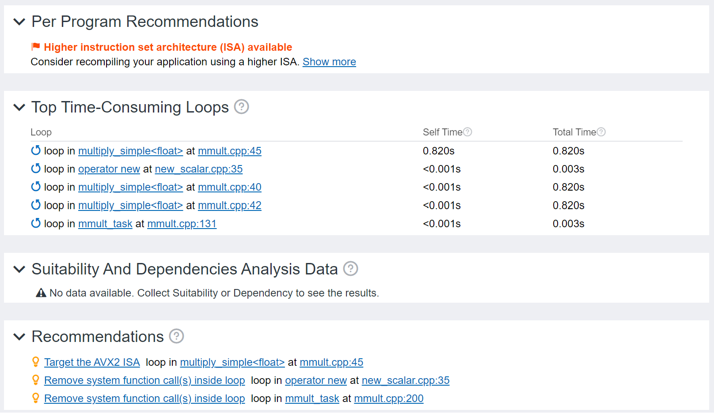
Roofline:
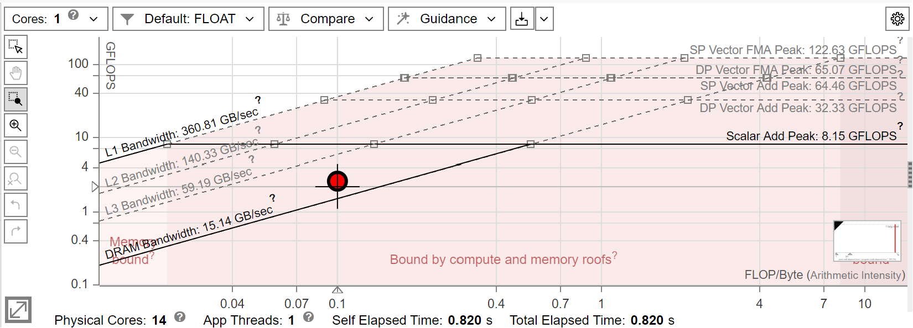
На графике руфлайна наглядно отображены ограничения пропускной способности (вычислительной и подсистемы памяти), а также то, насколько эффективно их использует тестовое приложение. На графике отображаются точки, характеризующие производительность самых горячих участков тестового приложения. И в данном случае, это цикл на строке 45 в mmult.cpp. Для этой точки вычисляются значения GFLOPS/GINTOPS и AI, а так же, исходя из используемого набора инструкций, типа операций (FP или INT) и конфигурации подсистемы памяти ограничивающие ее крыши.
Соответственно, ограничением производительности будет служить MIN(peakMemBandwidth x AI, peakGFLOPS)
Survey:
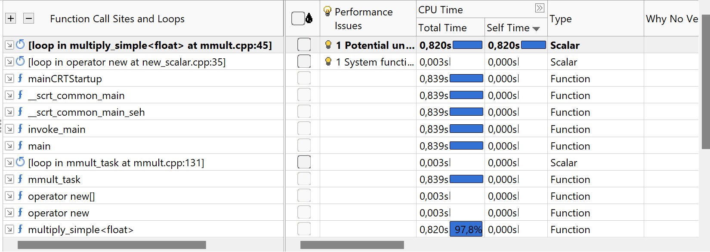
Bottom-up представление списка хотспотов приложения в виде таблицы с performance метриками.
Задание: Определить главный хотспот. Затем выделить ограничивающие его крыши, зафиксировать в отчете.
Ниже вкладки:
Source:
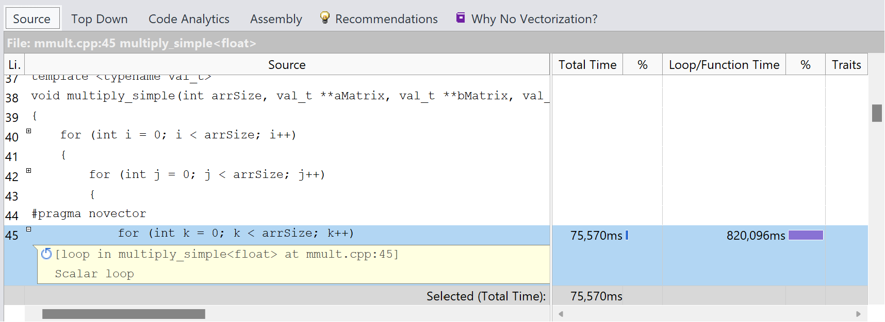
Выделено непосредственно место в исходном коде, соответствующее выбранному хотспоту.
Top Down
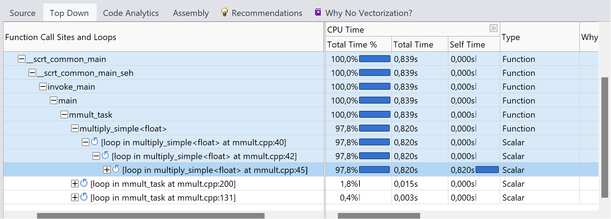
Дерево вызовов, для выбранного хотспота. Соответственно, для одного хотспота может быть выделено сразу несколько стеков вызовов. И тут уже можно посмотреть долю каждого в суммарном времени для хотспота.
Code Analytics - суммарная информация по хостпоту + по миксу инструкций для него (соотношение разных типов инструкций - memory vs compute)
Recommendations
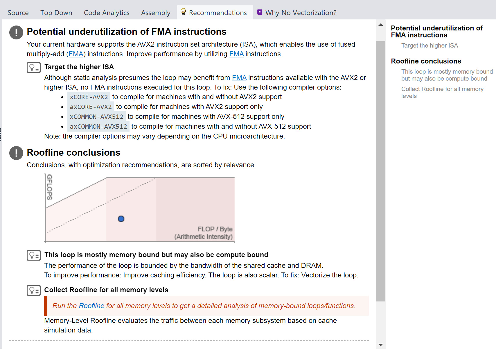
То, на что стоит обратить большее внимание. Довольно важной частью данного инструмента является система предоставления рекомендаций по анализируемому коду, советы, на что стоит обратить внимание, и даже, возможно, как можно исправить те или иные проблемы с производительностью приложения.
Далее перед любыми модификациями приложения необходимо делать снэпшоты:
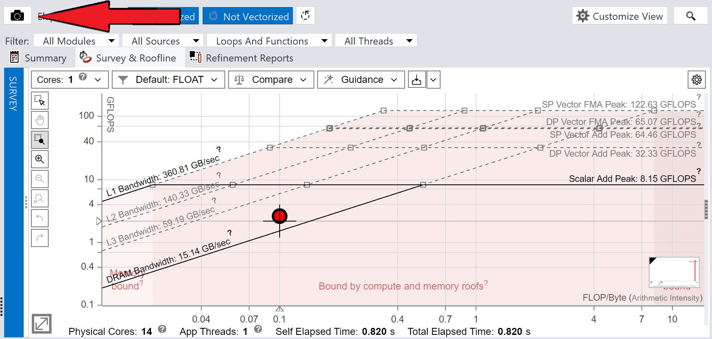
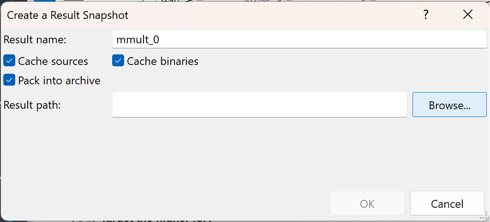
Снимки профиля, которые далее можно будет сравнивать между собой.
Итак, в данном примере нам предлагается две ракомендации:
Первое выполнять пока нет смысла, так как в самом коде у нас явно отключена векторизация. Тогда попробуем собрать Memory Level Roofline.
Для этого необходимо в панели Analysis Workflow, в Characterization блоке выбрать пункт Cache Simulation и пересобрать отчет.
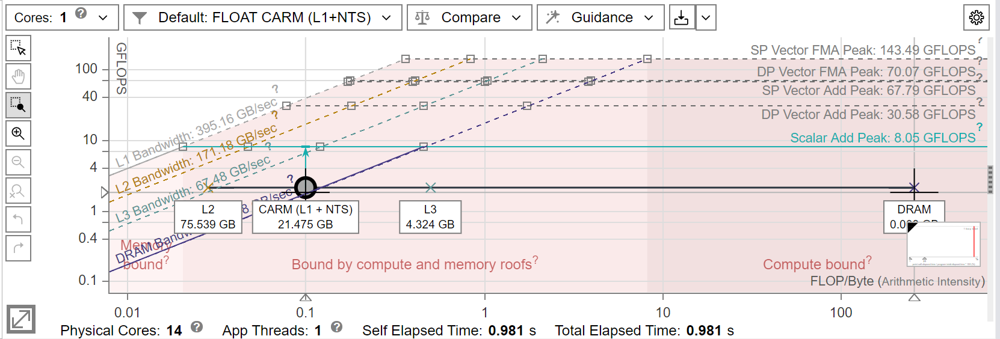
И теперь по двойному клику на точку на графике руфлайна раскроется раскладка для данного хотспота по утилизации различных уровней подсистемы памяти.
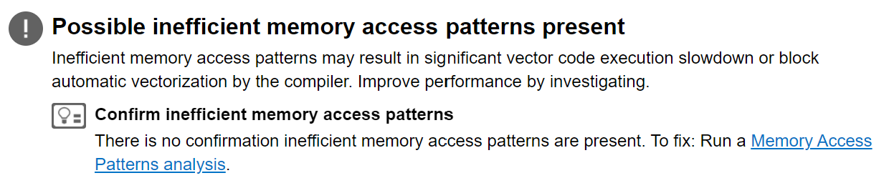
А в рекомендациях появится новая опция-предложение: запустить MAP анализ, который позволит определить паттерны доступа к памяти в рамках хотспота.
Для этого, во-первых, необходимо выделить интересующие нас хотспоты:
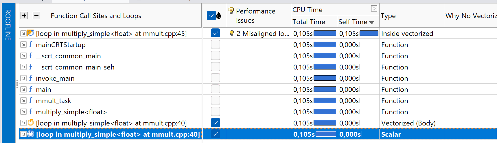
И выбрать в панели Analysis Workflow новый анализ - Memory Access Patterns и запустить его.
Третья вкладка Refinement Reports:
Тут можно найти отчет по проведенному MAP анализу:
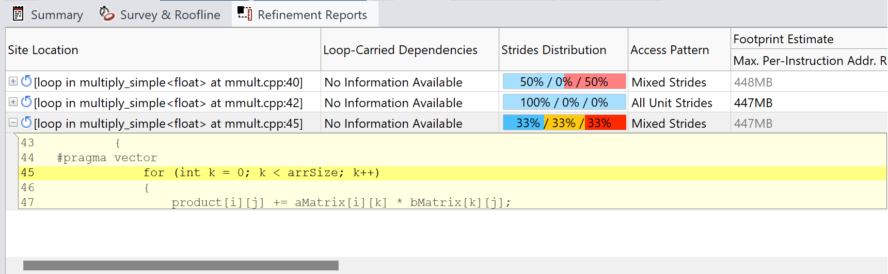
Где, собственно, и написано, что в нашей программе, в хотспоте, обнаружен неэффективный паттерн доступа к памяти. А ниже приведены рокомендации, как от этого можно избавиться:
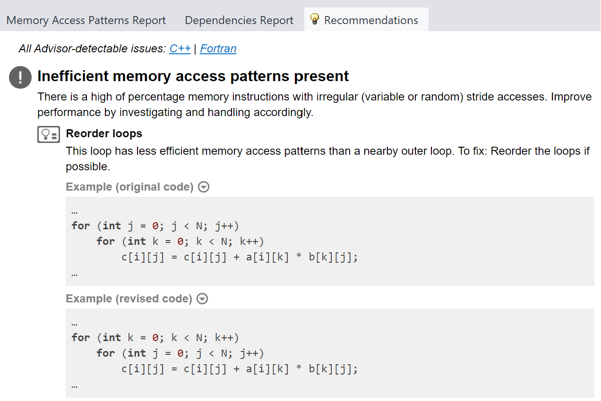
Сохраняем снэпшот и применяем исправления в коде. Снэпшот приложить к отчету. Можно собрать все в архив и сохранить для дальнейшей отправки преподавателю.
Memory Level Roofline для новой версии приложения:
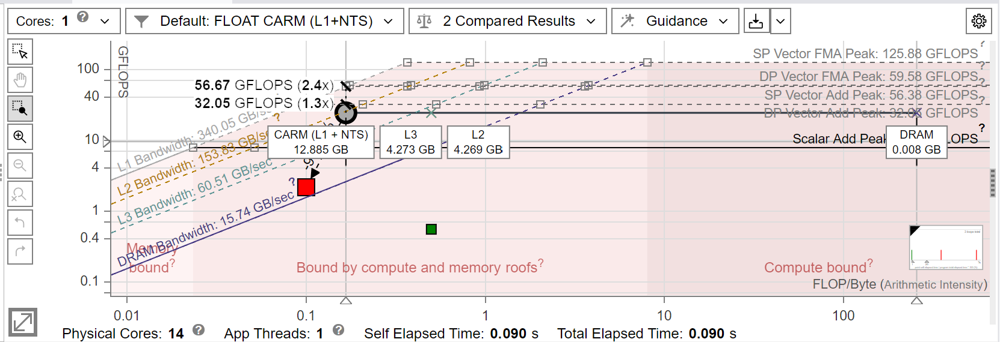
Доп. вопрос: о чем на рисунке выше говорит подобное расположение точек для разных уровней памяти на графике руффлайна.
Теперь можно сравнить две версии отчета соотв. разным версиям приложения:
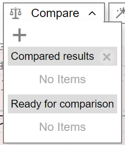
Добавляем сохраненный ранее снэпшот и получаем следующую картинку:
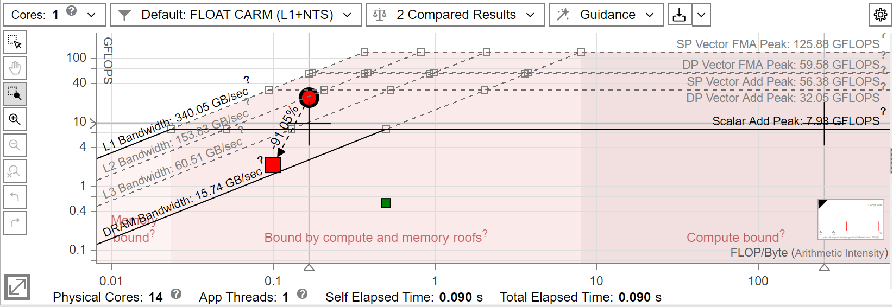
Наглядно видно прирост производительности.
Задание: добавить векторизацию
#pragma novector-->#pragma vector. Сравнить результат выполенния векторизованного кода с невекторизованным. Использовать AVX
add_compile_options(-O3 -Qopt-report=max -debug /QxCORE-AVX2 /Qalign-loops:32)